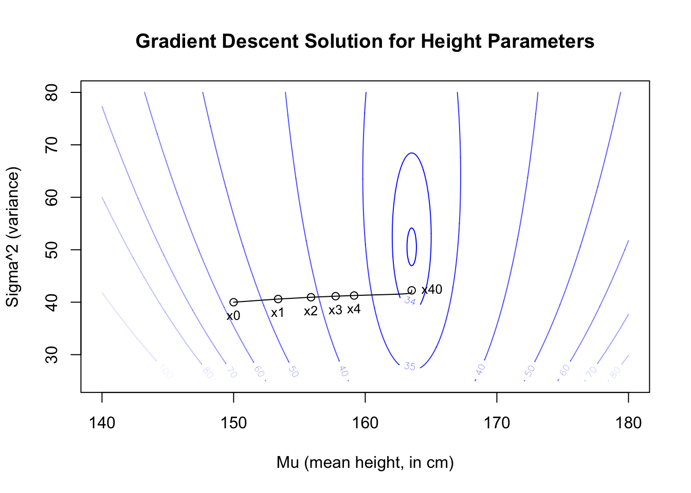

In The Newton-Raphson method, we learned a simple algorithm for finding the root of functions of a single variable. Although we can (and do) use the Newton-Raphson method to perform maximum likelihood estimation, it suffers from some drawbacks:
It does not easily extend to functions of multiple variables, and so we cannot use it to fit distributions with two or more parameters, such as the Normal distribution (\(\mu\) and \(\sigma^2\)).
It requires us to compute or estimate the first and second derivative of the likelihood (or log-likelihood) function, which may prove a mild inconvenience or in rare cases a mathematical impossibility.
Its searches inefficiently, since it picks a starting point, determines the direction of the slope, and “races ahead” toward what it expects will be the finish line. Only when it hits the x-axis does it stop to check how far off-course the original tangent line has led it.
Let us introduce a new algorithm which might solve these problems, called gradient descent.
Concept and definition
Suppose we are walking on the surface of a multi-dimensional log-likelihood function, trying to find the joint set of parameters which form the MLEs. Given a starting point (an initial guess for all parameters), we will use calculus to determine the slope of the “hill” under our feet and then take only a few short steps up or down the steepest slope of the hill. At this new waypoint, we will measure the slope again, to see if it has changed much, and walk in whichever direction now seems steepest. In real life this method would work well to find a hilltop or valley bottom, and in mathematics it works well to find maxima and minima.
Up until now, I have shown you ways to maximize the likelihood function, and if we were to use the principles above to find a hilltop, we would call this technique “gradient ascent”. However, when we work with computers to implement this algorithm, it is often easier to minimize the negative of the log-likelihood function, that is, to find the valley bottom.1 For this rather trivial reason, the technique is more often called “gradient descent”.
Note
Let \(f\) be a scalar-valued continuous and differentiable function of a vector of parameters \(\vec{x}=(x_1, \ldots, x_p) \in \mathbb{R}^p\). Define the gradient of \(f\) to be the vector-valued function which gives the direction and rate at which \(f\) increases most quickly:
Starting from an initial guess \(\vec{x}_0\), the method of gradient ascent allows us to iteratively approximate a nearby local maximum or minimum through the following series:
Where each new step size \(\gamma_n\) may be chosen according to several considerations.
This new method doesn’t find a root of the derivative, like the Newton-Raphson method, but rather directly solves for a local minimum. In practice there are important and very finicky considerations of (a) how big the step sizes should be and (b) whether you should necessarily proceed in the steepest possible direction, or if it might be smarter to approach the minimum obliquely.
I will show one method of choosing a step size, called backtracking line search. The following algorithm chooses the step size \(\gamma_n\) for a single iteration of the main gradient descent algorithm (iteration \(n\)):
In essence, a backtracking line search takes large steps when the function is being steadily minimized, meaning that all is going well, but shrinks the step size if the algorithm would overshoot or otherwise yield unexpectedly poor results.
Note
Let \(f\), \(\vec{x}\), and \(\nabla f(\vec{x})\) be defined as above, and let \(\vec{x}_{n-1}\) be the previous guess for the value of \(\vec{x}\) which maximizes \(f\). A backtracking line search will set the next step size, \(\gamma_n\), as follows. First, choose a fixed \(\beta \in (0,1)\). Then, iterating over the subscript \(i\),
Stop this search when \(\gamma_{n,i} = \gamma_{n,i-1}\), and define that to be \(\gamma_n\), the step size for the next iteration of the gradient ascent algorithm.
Programming example: height data
Consider the height data from ten women discussed earlier. If we assume these heights are drawn from a Normal distribution, then we need estimates for the mean \(\mu\) and the variance \(\sigma^2\). We can solve for the MLEs exactly using algebra and calculus, but we can also recover the best estimates using gradient descent.
First let’s code up a generalized gradient descent algorithm, with a backtracking line search. This code would work to solve many cases, but it’s not perfect and doesn’t handle every edge case: treat this as illustrative and not production-ready:
# gradient descent function with backtracking line searchgraddesc <-function(f, g, x0, b=0.8, tol=1e-2, max.iter=40){ i <-0 x <- x0 results <-t(c(0,x,-f(x)))while (sqrt(g(x)%*%g(x))>tol & i<max.iter) { i <- i +1 t <-1while ((f(x+t*g(x))<f(x)) & t>tol) { t <- t*b} x <- x + t*g(x) results <-rbind(results,t(c(i,x,-f(x))))}colnames(results) <-c('iter',paste0('x',1:length(x)),'f')return(results)}
1
Inputs are \(f\) (the likelihood function), \(g\) (the gradient of \(f\)), \(x_0\) (a starting guess), b/\(\beta\) (the backtracking constant), tol (a convergence tolerance, also used to create a minimum step size), and a maximum iteration count.
2
The outer loop completes each iteration of gradient descent algorithm.
3
The inner loop completes each choice of step size for the outer loop, using the backtracking line search algorithm.
4
Results are output to a table, including each iteration’s location in parameter space and the negative of the log-likelihood at that location.
Now we can add the height data, the likelihood function, and the gradient function:
#generate height dataheights <-c(170.1,161.6,175.2,166.3,165.6,165.8,152.0,155.8,168.6,154.3)#height log-likelihood for any parameter choiceheight.ll <-function(x){-1*length(heights)*log(2*pi*x[2])/2-sum((heights-x[1])^2)/(2*x[2])}#gradient of height log-likelihood for any parameter choiceheight.grad <-function(x){c(sum(heights-x[1])/x[2],-1*length(heights)/(2*x[2]) +sum((heights-x[1])^2)/(2*x[2]^2))}
1
In both functions, \(\vec{x} = (\hat{\mu},\hat{\sigma}^2)\) is a vector of normal parameters.
2
\(\partial \ell/\partial \mu\)
3
\(\partial \ell/\partial \sigma^2\)
With these in hand, we are ready to solve. Starting from a poor initial guess, the backtracking line search eventually finds the normal distribution MLEs of our data, reaching stability at around 40 iterations. In practice, the data, the distribution, your tuning parameters, and the initial guess will all affect the convergence speed of this algorithm.
xgrid <-seq(140,180,0.1)ygrid <-seq(25,80,0.1)zgrid <--1*matrix(apply(cbind(rep(xgrid,times=length(ygrid)),rep(ygrid,each=length(xgrid))),1,height.ll),ncol=length(ygrid))contour(xgrid,ygrid,zgrid,levels=c(120,100,80,70,60,50,40,35,34,33.8,33.7),col=paste0('#0000ff',c('00','20','40','60','80','9f','af','cf','ef','ff')),main='Gradient Descent Solution for Height Parameters',xlab='Mu (mean height, in cm)',ylab='Sigma^2 (variance)')lines(gd[,2],gd[,3])points(gd[c(1:5,40),2:3],pch=1)text(gd[c(1:5,40),2:3],paste0('x',c(0:4,40)),pos=c(1,1,1,1,1,4),cex=0.8)

Figure 8.1: Gradient descent approximation of height MLEs
Of course, the same parameters which maximize the likelihood will minimize the negative of the likelihood, so we will recover the same MLEs either way.↩︎